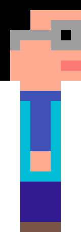

O Manifesto Ágil é um conjunto de princípios que regem o desenvolvimento de software. Com valores e princípios bem definidos, o Manifesto Ágil está disposto neste site para as devidas consultas.
Os Valores do Manifesto Ágil:
A partir deste, os desenvolvedores adeptos ao Manifesto Ágil passam a valorizar :
INDIVÍDUOS E INTERAÇÕES mais que processos e ferramentas
SOFTWARE EM FUNCIONAMENTO mais que documentação abrangente
COLABORAÇÃO COM O CLIENTE mais que negociação e contratos
RESPONDER A MUDANÇAS mais que seguir um plano
Os itens à direita são importantes mas, no manifesto ágil, há mais valor nos itens à esquerda.
Os 12 Mandamentos Princípios da Metodologia Ágil
Todos os DEV's adeptos ao Manifesto Ágil seguem os seguintes princípios:
Nossa maior prioridade é satisfazer o cliente, através da entrega adiantada e contínua de software de valor.
Aceitar mudanças de requisitos, mesmo no fim do desenvolvimento. Processos ágeis se adequam a mudanças, para que o cliente possa tirar vantagens competitivas.
Entregar software funcionando com freqüencia, na escala de semanas até meses, com preferência aos períodos mais curtos.
Pessoas relacionadas à negócios e desenvolvedores devem trabalhar em conjunto e diáriamente, durante todo o curso do projeto.
Construir projetos ao redor de indivíduos motivados. Dando a eles o ambiente e suporte necessário, e confiar que farão seu trabalho.
O Método mais eficiente e eficaz de transmitir informações para, e por dentro de um time de desenvolvimento, é através de uma conversa cara a cara.
Software funcional é a medida primária de progresso.
Processos ágeis promovem um ambiente sustentável. Os patrocinadores, desenvolvedores e usuários, devem ser capazes de manter indefinidamente, passos constantes.
Contínua atenção à excelência técnica e bom design, aumenta a agilidade.
Simplicidade: a arte de maximizar a quantidade de trabalho que não precisou ser feito.
As melhores arquiteturas, requisitos e designs emergem de times auto-organizáveis.
Em intervalos regulares, o time reflete em como ficar mais efetivo, então, se ajustam e otimizam seu comportamento de acordo.
Considerações Finais
Os métodos Ágeis são uma revolução no mundo do software e no mundo do trabalho.
Com sólidas metodologias utilizadas no mercado de trabalho (como Scrum), pode-se dizer que as mesmas são necessárias para todo desenvolvedor interessado em uma carreira atualmente.
Viva uma vida feliz e próspera como desenvolvedor sobre os métodos Ágeis!!!
Contato

Você provavelmente sabe quem eu sou, se você entrou nete site...
De qualquer forma, vou fingir que você não me conhece e fazer mistério deixar meu E-mail aqui:
Sinta se Livre para copiar e colar: emanueellalves@hotmail.com
Ou aperte esse botão, seu preguiçoso:
Qualquer dúvida ou maior interesse em métodos ágeis, aperte esse botão magníficooooooooooooo que está logo abaixo e viaje no site oficial do Manifesto Ágil que também está em HTML basicão: